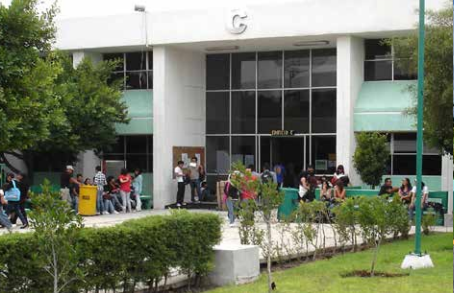
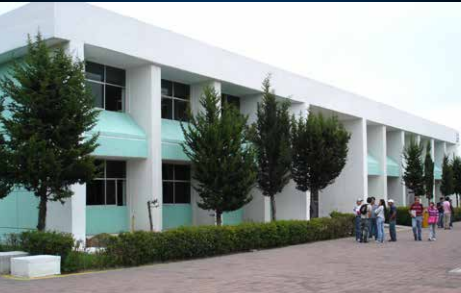
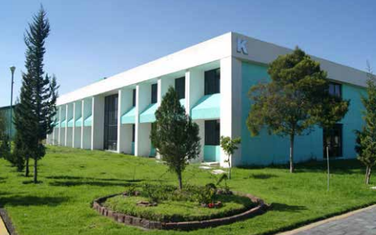
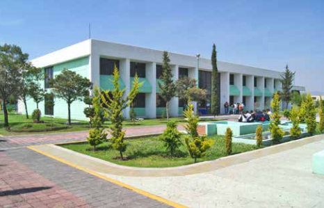
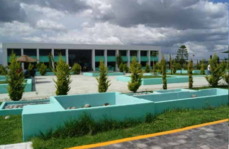
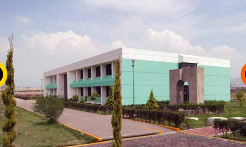
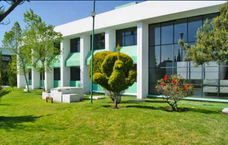

Proporciona enseñanza superior en 11 carreras y seis posgrados, siendo estos:

Ingeniería Química
Mas Info..
Ingeniería Bioquímica
Mas Info..

Ingeniería Electrónica
Mas Info..

Ingeniería Industrial
Mas info..

Ingeniería Mecánica
Mas Info.
Ingeniería Mecatrónica
Mas Info..

Ingeniería Sistemas Computacionales
Mas Info..

Ingeniería en Informática
Mas Info..
Ingeniería en Gestión Empresarial
Mas Info..

Contador Público
Mas Info..
Ingeniería Aeronáutica
Mas Info..Maestría en Ciencias en Ingeniería Química
Mas Info..
Maestría en Ciencias en Ingeniería Bioquímica
Mas Info..
Maestría en Ciencias en Ingeniería Mecatrónica
Mas Info..Maestría en Ingeniería en Sistemas Computacionales
Mas Info..
Maestría en Gestión Administrativa
Mas Info..